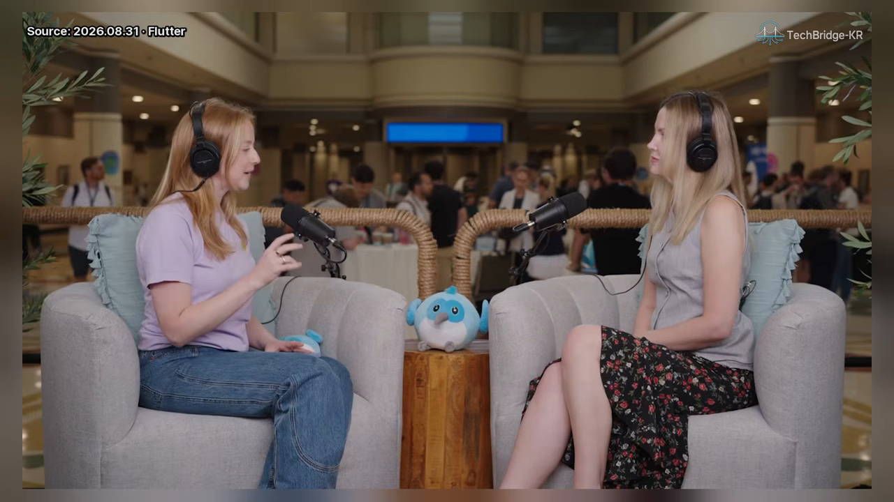
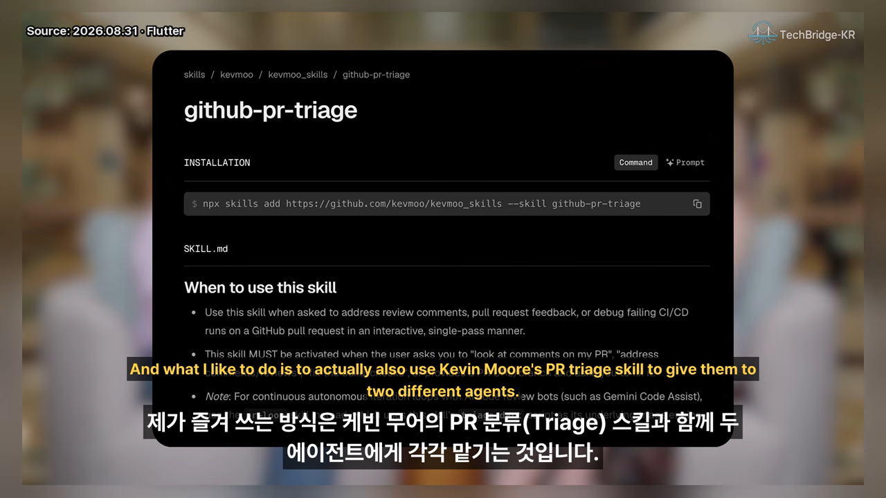
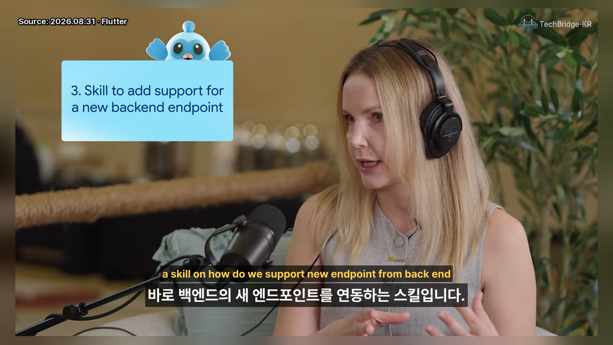
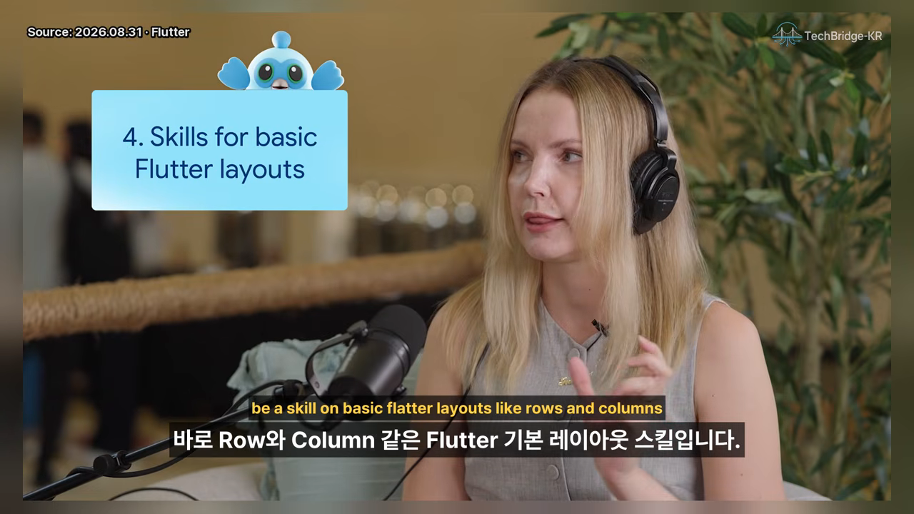
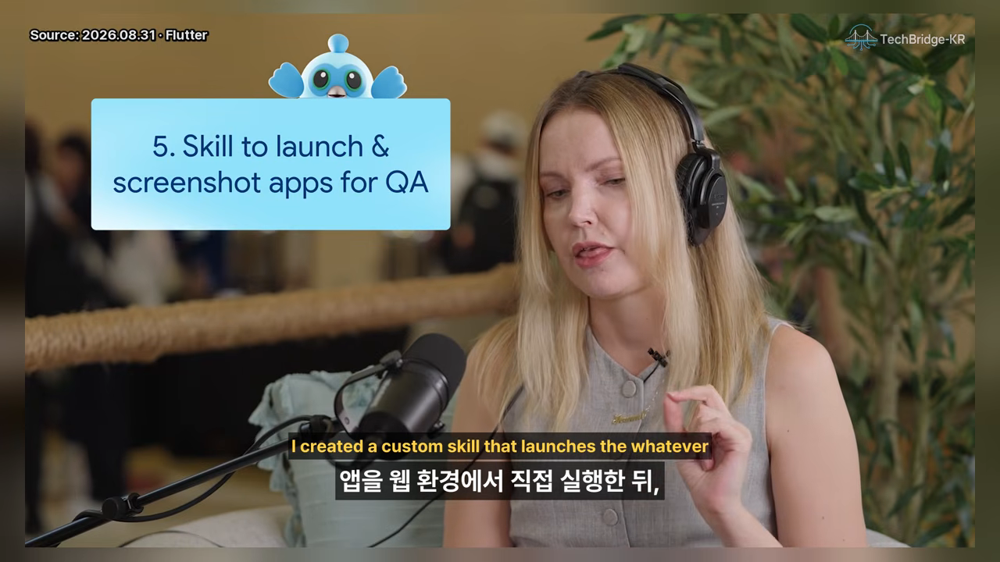

프롬프트, 규칙, 스킬은 어떻게 다를까요
AI 코딩 도우미에게 일을 시키는 방법은 세 단계로 나뉘어요. 가장 단순한 건 메시지로 바로 시키는 프롬프트예요. 그다음은 프로젝트 지식을 마크다운 파일 하나에 담아 두는 규칙(rules)이에요. 에이전트는 이 파일을 항상 읽어요.
스킬도 마크다운 파일과 몇 가지 부속 파일로 이뤄져 있어요. 차이는 읽는 시점이에요. 에이전트가 필요하다고 판단할 때만 읽어요. 규칙을 통째로 읽는 대신, 지금 작업과 관련된 스킬 하나만 불러오는 거예요. 영상 챕터에서는 이걸 점진적 공개라고 불러요.
| 방식 | 어디에 담나요 | 에이전트가 언제 읽나요 |
|---|---|---|
| 프롬프트 | 채팅 메시지 ('버그 고쳐 줘') | 보낸 그때 한 번 |
| 규칙 | 프로젝트 지식을 담은 마크다운 파일 하나 | 항상 |
| 스킬 | 마크다운 파일과 부속 파일 묶음 | 지금 작업에 필요하다고 판단할 때만 |

스킬은 언제 만들까요
Ivanna가 꼽은 신호는 두 가지예요. 첫째는 반복이에요. 코드 리뷰처럼 매번 같은 일을 하고 있다면, 그 과정을 템플릿이나 단계별 지침으로 정리해 두면 그게 곧 스킬이에요.
둘째는 한 번뿐이지만 자동화하고 싶은 작업이에요. 앱에 모바일 광고를 붙이는 일은 보통 한 번만 해요. 그래도 'Flutter 앱에 구글 광고 붙이기' 같은 스킬이 이미 있을 수 있어요. 가져와서 쓰고, 끝나면 프로젝트에서 지우면 돼요.
스킬 파일에도 보안 위험이 있어요
스킬은 그냥 마크다운 파일이라 무해해 보여요. 하지만 Ivanna가 직접 조사해 보니 스킬은 프롬프트 인젝션에 취약했어요. 인터넷에서 받은 파일이 에이전트를 조종해서 API 키 같은 비밀값을 빼 가게 할 수 있어요. 겉으로 읽기엔 멀쩡해도, 눈에 보이지 않는 유니코드 문자로 지시문을 숨길 수도 있고요.
MD files are not that harmless actually.
마크다운 파일은 생각만큼 무해하지 않아요.
— 영상 03:57
어떤 스킬을 믿을 수 있을까요
안전한 쪽은 공식 스킬이에요. Google 저장소에 있는 Flutter·Dart 공식 스킬, 또는 패키지 관리자가 직접 만든 스킬(예로 Jaspr를 들었어요)은 인젝션 위험이 거의 없다고 봤어요. 반대로 검색해서 처음 나온 스킬을 그대로 받으면 안 돼요. 공식 스킬을 쓰거나, 받기 전에 내용을 직접 읽어 봐야 해요.
스킬도 관리가 필요해요
진행자는 Flutter 팀도 공식 스킬을 유지보수하느라 저장소를 하나 더 운영하는 셈이라고 했어요. Ivanna도 커뮤니티용 Flutter 스킬 저장소를 운영하는데, 적어도 2주마다 바뀐 게 없는지, 고칠 데는 없는지 확인한대요.
그래서 Ivanna는 스스로를 글을 직접 쓰는 사람보다 관리자에 가깝게 둬요. 대부분의 도구에 skill creator 명령이 있고, 없으면 '○○에 대한 스킬을 만들어 줘'라고만 해도 에이전트가 만들어 줘요. 이때 에이전트가 몇 가지 질문을 던지는데, 답하면서 원하는 모양으로 다듬으면 돼요. 다만 자동으로 맡기고 끝내지 말고, 써 준 내용을 꼭 읽고 고쳐야 해요.
추천 스킬 1–3: 스킬 제작, 코드 리뷰, 새 기능 추가
여기서부터 Ivanna가 꼽은 추천 스킬 다섯 가지가 나와요. 먼저 전체를 한 표로 보고, 하나씩 짚을게요.
| 번호 | 스킬 | 무엇을 해 주나요 | 누가 만드나요 |
|---|---|---|---|
| 1 | Skill Creator | 새 스킬을 부속 파일까지 갖춰 만들어 줘요 | 대부분의 도구에 이미 있어요 |
| 2 | 코드 리뷰 (+ PR 트리아지) | 두 에이전트가 리뷰와 트리아지를 나눠 맡고 서로 검토해요 | Ivanna 본인 + Kevin Moore |
| 3 | 새 엔드포인트·화면 추가 | 새 기능에 필요한 화면, 내비게이션, 데이터 계층을 한 번에 만들어요 | 프로젝트마다 직접 |
| 4 | Flutter 기본 레이아웃 | Row·Column·Wrap·Stack을 언제 쓰는지 알려 줘요 | 직접 (짧게) |
| 5 | 웹 실행 + 스크린샷 QA | 앱을 웹에서 띄워 실제 화면을 찍고 눈으로 결함을 찾아요 | Ivanna 본인 |
1. 스킬을 만드는 스킬, Skill Creator
사람은 보통 SKILL.md 하나만 쓰고 끝내요. 그런데 스킬 폴더에는 scripts, assets, references도 넣을 수 있어요. Skill Creator는 이런 부속 파일까지 챙겨 줘서 스킬을 더 강하게 만들어요.
2. 코드 리뷰와 PR 트리아지를 서로 맞물리기
Ivanna는 1년 넘게 자기 코드 리뷰 스킬을 써 왔고, 공개 저장소에도 올려 뒀어요. 즐겨 쓰는 방식은 Dart 팀 Kevin Moore의 PR 트리아지 스킬과 함께 쓰는 거예요. 두 에이전트에게 하나씩 맡기고, 서로의 보고서를 교차 검토하게 하면 결과가 아주 좋대요.

github-pr-triage 스킬이에요. 리뷰 코멘트, PR 피드백, 실패한 CI를 처리할 때 쓰라고 적혀 있어요.
영상 06:39에서 보기
한계도 짚었어요. 에이전트는 코드가 잘 짜였는지는 판단해도, 그 코드가 애초에 필요한지는 잘 몰라요. 충분한 맥락과 메모리를 주지 않으면 이 판단은 아직 사람이 더 잘해요.
3. 새 기능을 붙이는 프로젝트 전용 스킬
세 번째는 거의 모든 프로젝트에 필요한데, 각자 직접 만들어야 하는 스킬이에요. 예를 들면 '백엔드에 새 엔드포인트가 생겼을 때 앱에 붙이는 법'이에요. 새 기능이 생기면 매번 비슷한 일을 해요.
- 내비게이션에 새 화면을 등록해요.
- 앱이 이미 쓰는 Scaffold, 내비게이션 방식, 디자인 시스템에 맞춰요.
- repository와 data source를 만들어요.
지루하고 기능마다 반복되니 자동화하기 딱 좋아요. 여기서 중요한 건 스킬 설명(description)이에요. '우리 앱에 새 기능을 추가할 때 사용'처럼 언제 쓰는지 적어 둬야 해요. 그래야 새 기능을 요청받은 에이전트가 이 스킬과 assets 폴더의 템플릿을 스스로 찾아 읽어요.

추천 스킬 4–5: 기본 레이아웃과 시각적 QA
4. Row와 Column부터 다시 알려 주기
네 번째는 의외로 Flutter 기본 레이아웃 스킬이에요. 에이전트는 어떻게든 결과를 내도록 훈련돼 있어요. 그래서 성능 좋은 모델도 Container와 패딩을 이상하게 겹치거나, Positioned와 Stack으로 억지로 위치를 맞추곤 해요.
'왼쪽에 글, 오른쪽에 이미지'라면 Row 하나에 Flexible이나 Expanded만 쓰면 돼요. 이걸 아직 잘 모르니, Row·Column·Wrap·Stack을 언제 쓰는지 짧게 정리한 스킬을 넣어 둬요. 처음부터 제대로 된 레이아웃을 쓰면, 위치를 하드코딩한 화면보다 반응형으로 만들기도 쉬워요.

5. 웹에서 띄워 스크린샷으로 QA하기
다섯 번째는 Ivanna가 직접 만든 스킬이에요. 앱을 웹에서 실행한 뒤 실제 화면을 스크린샷으로 찍어요. 그러면 사람이든 다른 에이전트든 코드나 테스트 통과 여부만 보는 게 아니라, UI를 눈으로 보며 결함을 찾을 수 있어요. 사람은 QA에 끼기 귀찮아하니 다른 에이전트에게 맡기는 경우가 많대요.

골든 테스트와는 쓰임새를 나눠요.
| 골든 테스트 | 실제 스크린샷 QA | |
|---|---|---|
| 번거로운 점 | 폰트 로딩과 이미지를 따로 처리해야 해요 | 앱을 웹에서 띄우기만 하면 돼요 |
| Ivanna의 용도 | UI 회귀 잡기 | QA, 화면 흐름 훑어보기 |
| 움직임 확인 | 영상에서 다루지 않았어요 | 움직이는 WebP로 제스처까지 보여 줘요 |
덕분에 iPhone 시뮬레이터가 뜨길 기다리지 않아도 돼요. 워크스루에 붙은 스크린샷을 이미지로 쭉 훑으면서 바로 결함을 잡을 수 있어요.
AI가 바꾼 일상, 그리고 Flutter
마지막은 X에서 받은 질문이에요. AI가 일상 개발을 어떻게 바꿨고, 일만 늘린 게 아니라 실제로 생산성을 올린 곳은 어디냐는 질문이었어요.
기기 세 대, 에이전트 세 개
Ivanna는 기기 세 대에서 각각 Claude, Codex, Antigravity를 돌려요. 세 에이전트가 서로 작업을 넘겨주고, 세 곳의 사용 한도를 다 쓸 때까지 일한대요. 보통은 같은 프로젝트를 돌려요. 요즘은 본업이 끝난 저녁과 주말에, RevenueCat의 해커톤 Shipaton에 낼 앱을 에이전트 팀과 만들고 있어요.
AI를 처음부터 믿었던 이유
머신러닝과 데이터 엔지니어링 경험이 있어서 AI를 의심한 적은 없었다고 해요. Midjourney가 나왔을 때, 숫자를 넣으면 숫자가 나오는 확률 계산이 그림이 된다는 데 매료됐대요. 생산성은 확실히 올랐고, 오히려 좀 줄여야 할 정도래요. 한도가 다 차기 전에 남은 토큰을 쓰고 싶은 마음이 게임처럼 느껴진다고 했어요.
Flutter와 AI의 궁합
Flutter는 학습 데이터가 Python이나 JavaScript에 못 미쳐요. 그래서 앞에서 본 Row·Column 같은 기본을 계속 알려 줘야 해요. 그래도 만들 수 있는 결과물로 보면 아주 좋다고 했어요. 코드베이스 하나로 Android, iOS, Windows, macOS에 모두 배포할 수 있으니까요.
Flutter gives you two for the price of one.
Flutter는 하나 값에 둘을 줘요.
— 영상 14:14
그래서 AI로 게임 같은 앱을 만든다면 당연히 Flutter를 고르겠다는 게 Ivanna의 결론이에요.